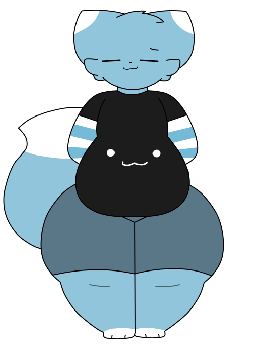

poi
basic info
Gender: Male
Height: 5'7
Weight: 225 lbs
Sexuality: Pansexual
biography
Poi (or Poi Madds) is a bottom-heavy blue cat with a somewhat large tail, he is Cyn's brother. He wears a shirt with a rather silly face, some blue-striped arm warmers, and some blue shorts. Most of the time, he likes to lounge around the house when his sister is not around, on other times, he loves to hang out with people, and sometimes likes to show off... too. He is also very supportive to his sister, and always wants the best for her.